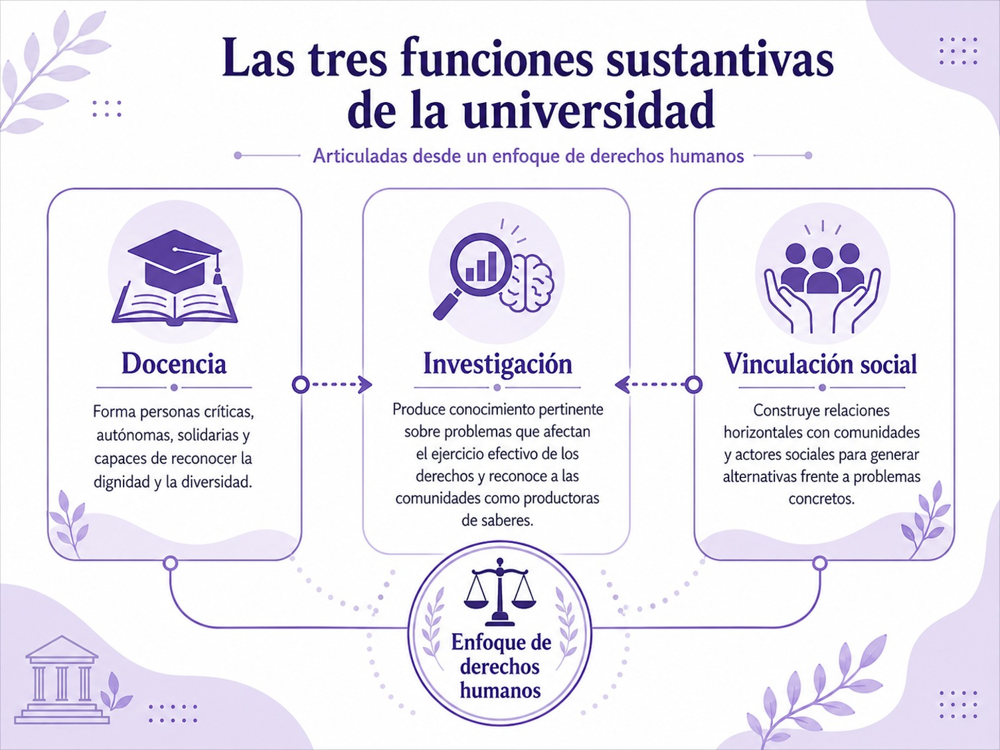

Después de analizar los derechos humanos desde una perspectiva crítica y desde las experiencias del Sur Global, llevaremos esta reflexión al interior de la propia universidad. La pregunta cambia entonces de escala: ya no se trata únicamente de saber qué son los derechos humanos o cómo deben defenderse en la sociedad, sino de preguntarnos qué significa que una universidad organice su docencia, su investigación y su vinculación social desde los derechos humanos.
Esta pregunta es especialmente importante porque los derechos humanos no deberían aparecer en la educación superior como un contenido complementario, reservado para algunas carreras o asignaturas. David Fernández (2003), sostiene una idea mucho más profunda: si la finalidad de la educación es contribuir al desarrollo pleno de la persona en su dimensión social, entonces la educación constituye en sí misma un espacio de construcción de valores compartidos. Desde este planteamiento, los derechos humanos se encuentran en el corazón de la identidad universitaria; no son algo externo que se incorpora posteriormente, sino un horizonte que debería dar sentido a las diferentes funciones de la institución.
Esto supone modificar una concepción instrumental de la universidad puesto que, cuando la educación superior se reduce exclusivamente a formar profesionistas con enfoque para responder a las necesidades del mercado laboral, existe el riesgo de dejar en segundo plano preguntas fundamentales: ¿para qué se produce conocimiento?, ¿a quién beneficia?, ¿qué problemas sociales decide investigar la universidad?, ¿quiénes tienen acceso a sus recursos?, ¿qué tipo de profesionistas forma y para qué sociedad? Frente a esta tendencia, Fernández (2003), propone recuperar el desarrollo humano, la solidaridad y la justicia como referentes de la educación superior y comprender la universidad como una institución con capacidad para intervenir en los procesos de transformación cultural y social.
Esta concepción coincide, desde una perspectiva latinoamericana más radical, con el planteamiento de Ignacio Ellacuría (1982), quien afirma que la universidad no puede comprender la realidad social desde una supuesta neutralidad. En sociedades profundamente desiguales, como la nuestra, las mayorías populares que padecen la privación de derechos constituyen un lugar privilegiado desde el cual interrogar esa realidad. Por ello, la defensa de los derechos humanos de las mayorías no debe constituir una tarea periférica de la institución, sino formar parte de su horizonte teórico y práctico. La universidad, precisamente porque produce y transmite conocimiento, tiene una responsabilidad particular ante la injusticia.
Desde esta perspectiva podemos comprender las funciones sustantivas de la universidad: docencia, investigación y vinculación o difusión social, como dimensiones interdependientes de una misma responsabilidad. Los derechos humanos adquieren verdadera fuerza universitaria cuando atraviesan simultáneamente lo que la universidad enseña, lo que investiga, la manera en que produce conocimiento y las relaciones que construye con la sociedad.
Los derechos humanos en la docencia
La primera función sustantiva es la docencia, integrar los derechos humanos en esta función no significa únicamente crear una asignatura específica sobre la Declaración Universal, los tratados internacionales o las instituciones de protección. Estos conocimientos son necesarios, pero insuficientes. La educación en derechos humanos supone también transformar la propia relación pedagógica.
Fernández (2003), cuestiona el modelo en el que una persona posee el conocimiento, lo transmite y otra lo recibe, memoriza y reproduce. Frente a esta lógica vertical, propone una relación educativa que acompañe al estudiantado tanto en la elaboración del conocimiento como en el desarrollo de habilidades. En nuestra casa de estudios, el modelo implica que tú, como estudiante, no seas una persona destinataria y pasiva del discurso académico sino que te conviertas en verdadero sujeto de aprendizaje.
Esta idea adquiere especial significado después de lo revisado en el saber declarativo anterior. Si cuestionamos una concepción de los derechos humanos que pretende simplemente ser “llevada” desde las instituciones hacia las comunidades, también debemos cuestionar una educación en la que los conocimientos descienden verticalmente del profesorado hacia el estudiantado. Una pedagogía coherente con los derechos humanos debe reconocer capacidad de reflexión, autonomía y producción de conocimientos en las personas que participan en el proceso educativo.
Esto implica, que toda la comunidad estudiantil nos comprometamos en desarrollar una relación pedagógica crítica, plural y contextualizada, para que el conocimiento universitario se confronte permanentemente con la realidad social. Es decir, una teoría económica, jurídica, ambiental, tecnológica, administrativa o educativa no se enseña únicamente por su consistencia disciplinar, sino interrogando también sus consecuencias para las personas y las comunidades. De ahí que Fernández (2003), sostenga que quien enseña desde una preocupación por los derechos humanos debe situar los conocimientos en la realidad concreta y hacer visibles los desafíos éticos que se desprenden de ella.
La docencia adquiere así una dimensión ética, es decir, que no basta con preguntar si una solución es técnicamente posible; también debe preguntarse a quién beneficia, quién asume sus costos, qué derechos protege, cuáles puede vulnerar y qué grupos quedan excluidos de las decisiones.
Desde esta concepción, el aula universitaria debe convertirse en un espacio para aprender a reconocer diferentes perspectivas, argumentar, escuchar, problematizar y construir conocimientos con otras personas. El pluralismo, la colaboración interdisciplinaria y el espíritu crítico son componentes esenciales de esta formación. En consecuencia, los derechos humanos no quedan confinados a determinadas disciplinas: las perspectivas de derechos humanos, género, medio ambiente e interculturalidad deben atravesar las distintas experiencias formativas. Fernández (2003), plantea precisamente que estas dimensiones deben estar presentes en toda práctica docente. De hecho, la recomendación recogida por UNESCO para América Latina y el Caribe avanza en la misma dirección: los componentes de derechos humanos deberían incorporarse en las diferentes carreras universitarias de manera obligatoria, optativa y/o transversal, acompañados de metodologías sólidas y plurales.
Por ello, para nuestra casa de estudios transversalizar los derechos humanos significa algo más profundo que agregar contenidos a los programas, significa por ejemplo aprender ingeniería preguntándose por el acceso equitativo a las infraestructuras; administración considerando condiciones laborales dignas; arquitectura interrogándose sobre el derecho a la ciudad; psicología reconociendo diversidad y no discriminación; tecnologías digitales considerando privacidad y exclusión; y educación analizando las desigualdades que condicionan las trayectorias de aprendizaje.
Los derechos humanos en la investigación
La segunda función sustantiva de la universidad es la investigación, y desde un enfoque de derechos humanos, investigar implica preguntarse no solo qué problemas resultan académicamente interesantes, sino qué realidades necesitan ser comprendidas para contribuir al bienestar, la justicia y la dignidad de las personas.
Fernández (2003), plantea que la investigación universitaria debe responder a la realidad particular en la que la universidad se encuentra inserta y orientarse hacia su transformación, esto significa producir investigación rigurosa, pero también socialmente pertinente. Las desigualdades, la discriminación, la pobreza, las violencias, la exclusión de los pueblos indígenas, los problemas ambientales o las deficiencias en el acceso a la justicia no son únicamente temas sociales, de hecho, constituyen los desafíos para la producción universitaria de conocimiento.
Aquí resulta fundamental recuperar la perspectiva de Ellacuría (1982), pues afirma que ninguna universidad debería conocer menos que otras instituciones la realidad social en la que se encuentra inserta porque la realidad nacional constituye un objeto fundamental del saber universitario y, en sociedades caracterizadas por profundas desigualdades, esa realidad no puede comprenderse plenamente si se ignora la experiencia de las mayorías populares.
Esta formulación se conecta directamente con la perspectiva crítica revisada anteriormente, en que las comunidades afectadas por los problemas no deben aparecer únicamente como objetos de investigación, sino que sus experiencias contienen conocimientos, interpretaciones y formas de comprender los problemas que deben ser reconocidos. De ahí que una investigación universitaria fundada en derechos humanos tenga que avanzar de una lógica extractiva -en la cual la universidad obtiene datos de las comunidades y se retira posteriormente- hacia formas de producción de conocimiento más dialógicas y colaborativas. La investigación debe escuchar, aprender, devolver resultados y, cuando sea posible, construir alternativas conjuntamente con las personas implicadas.
De hecho, Ellacuría (1982), lleva esta idea todavía más lejos: la razón universitaria no debería sustituir ni hablar paternalistamente por las comunidades, sino ponerse al servicio de las razones que ya existen en ellas, aprender de su experiencia y contribuir a que puedan ser articuladas públicamente. En ese sentido, la universidad puede aportar metodologías, sistematización, análisis crítico y capacidad argumentativa, pero sin apropiarse de los conocimientos comunitarios ni presentarse como única instancia autorizada para interpretar la realidad.
En términos de la reflexión que hemos venido construyendo, esto implica pasar de una universidad que investiga a las comunidades hacia una universidad que investiga con las comunidades.
Los derechos humanos en la difusión y la vinculación social
La tercera dimensión universitaria corresponde a la difusión, extensión y vinculación universitaria. Tradicionalmente estas funciones fueron entendidas como la transferencia hacia la sociedad de los conocimientos producidos dentro de la universidad. El conocimiento se originaba dentro de la institución y posteriormente era extendido hacia quienes se encontraban fuera.
Desde una perspectiva crítica, esta concepción resulta insuficiente, por ejemplo, Fernández (2003), sostiene que la universidad debe atender a la realidad social concreta en la que se encuentra inserta y contribuir al fortalecimiento de condiciones de justicia y equidad. Particularmente importante es que los proyectos consideren seriamente los puntos de vista, las formas de organización y los recursos de las personas a quienes están dirigidos.
Esta idea modifica profundamente la vinculación universitaria, ya que las comunidades dejan de ser consideradas simples receptoras de servicios y comienzan a ser reconocidas como sujetos políticos, interlocutores y productores de conocimiento. Por ello, la vinculación desde los derechos humanos requiere relaciones horizontales, es por ello que, la universidad aporta conocimientos científicos y profesionales, y al mismo tiempo está dispuesta a aprender de los conocimientos comunitarios, territoriales, campesinos, indígenas y populares. Entonces, vincularse significa construir espacios de diálogo, colaboración y corresponsabilidad.
Así, la universidad no debe limitarse a tener un conocimiento distante de las necesidades de las mayorías, sino mantener contacto con quienes experimentan directamente esas necesidades y reconocerlos como sujetos activos capaces de intervenir en su solución. Esta transformación resulta fundamental para la Responsabilidad Social Universitaria. La vinculación no consiste en que la universidad ayude unilateralmente a la sociedad y con sentido asistencialista, sino construya relaciones donde universidad y comunidades identifiquen problemas, produzcan conocimientos, diseñen alternativas y evalúen conjuntamente los resultados.
En el siguiente diagrama verás las tres funciones en las que participa nuestra casa de estudios desde un enfoque de derechos humanos:

La integración de estas dimensiones evita que los derechos humanos se conviertan en una declaración abstracta. La universidad podría impartir cursos sobre derechos humanos y, sin embargo, desarrollar investigaciones extractivas o establecer relaciones paternalistas con las comunidades pero ello no reflejaría la coherencia entre los valores proclamados y nuestras prácticas universitarias.
- Ellacuria, Ignacio (1982). Universidad, derechos humanos y mayorías populares, en Estudios Centroamericanos ECA, 791-800.
- Fernández, D. (2003). Los derechos humanos en las funciones sustantivas de la universidad,
- La Educación Superior en Derechos Humanos en América Latina y el Caribe. México. UNESCO.
Te recomendamos ver estos videos para profundizar sobre este tema:
Integración de los derechos humanos en la identidad institucional y en las prácticas educativas
Si los derechos humanos atraviesan las funciones sustantivas de la universidad, su incorporación debe comenzar todavía más profundamente: en la identidad misma de la institución. David Fernández (2003), formula esta idea con claridad al sostener que los derechos de las personas se encuentran en el corazón del ser universitario y que los derechos humanos no constituyen algo añadido a la universidad. Esta afirmación permite establecer una distinción importante: no es lo mismo que una universidad tenga actividades sobre derechos humanos a que una universidad se conciba a sí misma desde los derechos humanos.
En el primer caso, los derechos humanos pueden reducirse a congresos, cursos, campañas o proyectos específicos. Nuestro compromiso en esta casa de estudios es que además de eso, se conviertan en un criterio para interpretar la misión universitaria, tomar decisiones, organizar la formación, producir conocimientos y establecer relaciones con la sociedad.
Los derechos humanos como parte de la identidad universitaria
Integrar los derechos humanos en la identidad institucional significa asumir que la universidad existe no únicamente para transmitir conocimientos especializados ni para certificar competencias profesionales. Su finalidad incluye contribuir al desarrollo humano, al bien común y a la construcción de sociedades más justas. Desde este enfoque, conceptos como dignidad, igualdad, libertad, solidaridad, pluralismo, no discriminación, participación y justicia no deberían aparecer solamente en documentos institucionales. Deben convertirse en criterios desde los cuales la universidad evalúe sus propias prácticas.
Entonces, como podemos ver existe una diferencia entre afirmar que la universidad respeta los derechos humanos a construye cotidianamente una cultura universitaria de derechos humanos. Es así como la identidad institucional se vuelve efectiva, cuando los valores orientan las relaciones entre estudiantes, docentes, personal administrativo, autoridades y comunidades; cuando la diversidad puede expresarse sin convertirse en motivo de exclusión; cuando la participación es valorada; y cuando las personas pueden plantear desacuerdos, cuestionar decisiones y construir alternativas. En este sentido, los derechos humanos no constituyen solamente reglas para evitar determinados abusos. También ofrecen principios para crear una comunidad universitaria sustentada en el reconocimiento recíproco.
No es propósito de nuestra casa de estudios, que tú como estudiante memorices las normatividades sobre derechos humanos, sino que en la relaciones dentro de esta institución encuentres la realización y ejercicio de esos derechos pero también te prepares pare contribuir a hacerlos efectivos en tus propias relaciones sociales y comunidades, de modo que la propia experiencia educativa se construya a partir del respeto, el diálogo, la participación, la autonomía, la responsabilidad y la pluralidad. Y más aún, en las relaciones sociales que tú como estudiante de esta universidad construyas relaciones basadas en ello.
Derechos y responsabilidades
Finalmente, algo que no debemos olvidar, es importante que sepas que educar en derechos humanos significa también educar para la responsabilidad. El reconocimiento de nuestros derechos no puede desvincularse del reconocimiento de los derechos de las demás personas. Valores como solidaridad, equidad, libertad, tolerancia y no discriminación requieren prácticas concretas de corresponsabilidad. Esto resulta especialmente relevante para tu formación universitaria pues tu ejercicio profesional no debería valorarse exclusivamente por el éxito individual o por la rentabilidad económica que vas a tener, sino en una formación socialmente responsable que te ayude a reconocer que tus decisiones profesionales producirán impactos sobre otras personas, comunidades y territorios.
Así, formar desde los derechos humanos significa formar personas capaces de preguntarse: ¿Qué efectos tendrá mi conocimiento y mi ejercicio profesional sobre la dignidad, los derechos y las condiciones de vida de otras personas? Observa el siguiente diagrama:

En suma, integrar los derechos humanos en nuestra universidad supone avanzar de una lógica en la que estos aparecen como contenido académico, hacia otra en la que funcionan como principio articulador de la vida universitaria. Los derechos humanos deben estar presentes en aquello que se enseña, en cómo se enseña, en los problemas que se investigan, en la manera de producir conocimiento y en las relaciones que se construyen con las comunidades.
- Fernández, D. (2003). Los derechos humanos en las funciones sustantivas de la universidad,
- La Educación Superior en Derechos Humanos en América Latina y el Caribe. México. UNESCO.
- Kompass, A. (2007). La universidad ante la agenda internacional de los derechos humanos. En Gloria Ramírez, Coord.
- La educación superior en derechos humanos: una contribución a la democracia. México: Cátedra Unesco-FCPyS-UNAM, 101-104
- Ellacuria, Ignacio (1982). Universidad, derechos humanos y mayorías populares, en Estudios Centroamericanos ECA, 791-800.
Te recomendamos ver este video para profundizar sobre este tema: